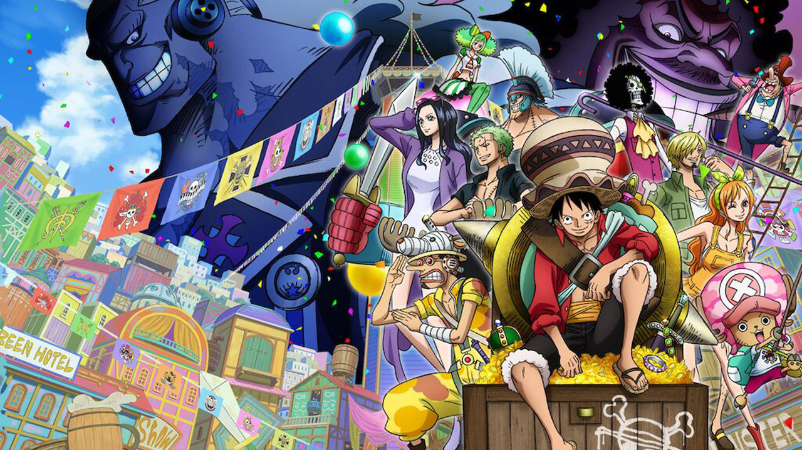

One Piece: Gold

One Piece: A aventura na ilha Nejimaki
"

Numa época distante, envolta em mistérios e lendas, existiu um pirata cujo nome ecoava pelos sete mares, o Pirata de Ouro Woonan. Conta-se que ele alcançou o feito notável de acumular aproximadamente um terço de todo o ouro conhecido no mundo. Porém, ao se deparar com o iminente fim de sua jornada pirata, Woonan tomou uma decisão surpreendente. Em vez de desfrutar de sua riqueza em seus últimos dias, ele optou por esconder todo o seu tesouro em uma ilha remota, oculta por intricados enigmas e desafios. A lenda dizia que Woonan deixara para trás um mapa, uma carta de desafios, e sua imensa fortuna para ser descoberta por um destemido sucessor. A busca pelo tesouro tornou-se uma obsessão entre os piratas, marinheiros e aventureiros, alimentando as conversas nos portos e tavernas. Cada novo amanhecer trazia consigo a promessa de riquezas inimagináveis, mas o caminho para o tesouro de Woonan era traiçoeiro e repleto de perigos. Nami, a navegadora habilidosa e membro valioso dos Chapéus de Palha, descobriu uma maneira de decifrar os antigos escritos e chegar à misteriosa ilha onde repousava o ouro lendário. No entanto, a jornada não seria tão simples como traçar um curso no mar. Os Chapéus de Palha logo perceberam que não estavam sozinhos nessa busca, pois outros piratas cobiçosos também almejavam as riquezas de Woonan. Entre os rivais mais detestáveis estava El Drago, um pirata impiedoso cujo bando estava disposto a tudo para alcançar o tesouro antes de qualquer outro. O mar revolto tornou-se palco de batalhas épicas entre os Chapéus de Palha e os seguidores de El Drago, enquanto ambos enfrentavam os perigos da ilha escondida. A trama se desenrola com estratégias ardilosas, alianças improváveis e reviravoltas emocionantes. Nami, Luffy e os demais Chapéus de Palha estão determinados a proteger a herança de Woonan contra aqueles que tentariam explorá-la para ganho pessoal. No coração da história, reside não apenas a busca pelo ouro, mas a luta pela justiça, a amizade verdadeira e a bravura diante do desconhecido. Assim, os aventureiros navegaram através de tormentas e enfrentaram adversários formidáveis, tudo em busca do lendário tesouro do Pirata de Ouro Woonan, cujo legado permanece vivo nos anais do Grande Mar.
Num tranquilo intervalo de descanso em uma ilha pitoresca, a tripulação dos Chapéus de Palha desfrutava de merecido repouso após suas intensas aventuras. O clima sereno e a beleza natural da ilha proporcionavam um refúgio temporário para Luffy, Nami, Zoro, Sanji, Ussop e os demais membros da tripulação. Contudo, a calmaria logo se desfez quando, sem aviso, o Going Merry, fiel navio da tripulação, desapareceu misteriosamente. Determinados a recuperar seu precioso navio, os Chapéus de Palha embarcaram em uma busca frenética. Logo, eles se depararam com os Ladrões Brothers, Borodo e Akisu, que traziam consigo notícias preocupantes. O Going Merry tinha sido roubado pelos piratas Trump Kyoudai, uma ameaçadora gangue que havia estabelecido seu covil na temida ilha Clockwork Island. Antes que pudessem reagir, os Chapéus de Palha foram surpreendidos por um ataque impiedoso dos Trump Kyoudai, revelando a ferocidade de seus adversários. Nesse momento tenso, os Ladrões Brothers se apresentaram como aliados inesperados, compartilhando informações cruciais sobre a localização e os perigos iminentes que aguardavam na Clockwork Island. A urgência do resgate se intensificou quando Nami foi sequestrada pelos piratas, adicionando um elemento pessoal à missão. Com determinação inabalável, Luffy liderou seus companheiros e os Ladrões Brothers em direção à Clockwork Island, uma terra envolta em mistérios e perigos mecânicos. Ao chegar à ilha, os Chapéus de Palha foram recebidos por uma resistência implacável dos Trump Kyoudai. O confronto foi feroz, e a tripulação dos Chapéus de Palha logo percebeu que a Clockwork Island era um lugar onde o tempo parecia seguir regras próprias, cheia de armadilhas e desafios. Infelizmente, a situação se agravou quando Sanji, Ussop e Zoro foram capturados pelos piratas, ampliando a urgência da missão de resgate. A narrativa se desenrola com reviravoltas emocionantes, estratégias astutas e a união improvável de forças para enfrentar os Trump Kyoudai e suas maquinações diabólicas. Assim, os Chapéus de Palha, ao lado dos Ladrões Brothers, embarcam em uma jornada repleta de ação e perigos para resgatar seus amigos e recuperar o Going Merry, provando mais uma vez que a amizade e a determinação são as verdadeiras âncoras que os mantêm unidos nos mares tumultuados do Novo Mundo.
Em sua incansável busca por aventuras, Luffy e seus companheiros de tripulação chegaram à misteriosa ilha de Crown, um vasto deserto habitado por animais inteligentes, capazes de pensar e agir como seres humanos. A paisagem desértica era pontuada por criaturas extraordinárias, dotadas de uma inteligência peculiar que surpreendia os Chapéus de Palha. Em meio a essa jornada, Chopper, o médico rena transformado em humano, se viu separado do grupo em meio às vastas dunas de areia. Perdido e desorientado, Chopper eventualmente encontrou Mobambi, um jovem habitante da ilha que carregava consigo uma profunda aversão por piratas. Mobambi, único ser humano nativo da ilha de Crown, vivia entre os animais que, de alguma forma, aprenderam a coexistir e se comunicar de maneira surpreendentemente similar à dos humanos. A relação inicial entre Chopper e Mobambi era marcada por desconfiança e hostilidade, refletindo o profundo ódio de Mobambi pelos piratas. No entanto, à medida que o tempo passava, Chopper demonstrava sua natureza gentil e a verdadeira essência dos Chapéus de Palha, conquistando gradualmente a confiança de Mobambi e dos outros habitantes da ilha. Numa reviravolta inesperada, os habitantes de Crown, reconhecendo em Chopper uma liderança benevolente, decidiram coroá-lo como seu rei. O dilema de Chopper cresceu diante dessa responsabilidade inesperada, uma vez que, como membro leal dos Chapéus de Palha, ele se viu dividido entre seu dever para com seus amigos e a lealdade recém-adquirida dos habitantes da ilha. O conflito interno de Chopper culminou em um ponto crítico quando a tripulação dos Chapéus de Palha, liderada por Luffy, reuniu-se novamente. Chopper teve que tomar uma decisão difícil, enfrentando o dilema de permanecer como rei em Crown ou voltar ao seu papel como membro vital da tripulação dos Chapéus de Palha. A narrativa se desenrola entre a lealdade ao novo povo que o coroou e a amizade estabelecida com seus companheiros de tripulação. Os desafios surgem, testando os laços que unem Chopper aos Chapéus de Palha e explorando temas de liderança, responsabilidade e sacrifício. Assim, a ilha de Crown se torna palco de uma emocionante saga, onde a lealdade de Chopper é posta à prova, e ele é forçado a fazer escolhas difíceis que moldarão seu destino e o destino daqueles que o rodeiam.
Em meio a um oculto submundo pirata, os Chapéus de Palha se encontraram envolvidos em uma competição secreta, uma arena de desafios ferozes e perigos imprevisíveis. A isca para essa batalha de titãs era um prêmio tentador em dinheiro, atraindo diversas tripulações piratas determinadas a provar sua supremacia nos mares. A narrativa toma um rumo emocionante quando os Chapéus de Palha aceitam o desafio e se lançam de cabeça nesse torneio clandestino. A competição se desdobra como uma série de provas astuciosas e confrontos intensos, onde os Chapéus de Palha se veem diante de piratas poderosos e estratégias maliciosas. Entre os adversários, surge uma figura sinistra, uma sombra do passado da Marinha: o Capitão Gasparde. Um ex-oficial da Marinha que, por razões desconhecidas, escolheu trilhar o caminho sombrio da pirataria. Gasparde rapidamente se revela como o maior desafio que os Chapéus de Palha já enfrentaram. Seu conhecimento tático adquirido na Marinha, aliado à sua brutalidade desenfreada, coloca a tripulação de Luffy à prova. Cada confronto com Gasparde é uma luta pela sobrevivência, onde a astúcia e a força bruta se encontram de maneira visceral. Em meio a reviravoltas surpreendentes e alianças inesperadas, os Chapéus de Palha devem superar obstáculos cada vez mais difíceis para emergir vitoriosos nessa competição traiçoeira. As habilidades individuais de cada membro da tripulação são testadas ao máximo, e a camaradagem que os une é forjada em meio ao calor da batalha. A história se desenrola como uma montanha-russa de emoções, com momentos de triunfo e desespero se alternando enquanto os Chapéus de Palha enfrentam Gasparde e suas artimanhas cruéis. Ao enfrentar esse inimigo formidável, a tripulação aprende lições valiosas sobre perseverança, trabalho em equipe e os limites de sua própria força. Assim, a competição secreta torna-se uma saga épica, com Gasparde representando não apenas um adversário físico poderoso, mas também um símbolo dos desafios crescentes que os Chapéus de Palha enfrentarão em sua jornada pelos mares perigosos e desconhecidos.
Em sua busca por lendas e tesouros na Grand Line, a tripulação dos Chapéus de Palha chegou à misteriosa ilha de Asuka. Lá, eles se depararam com os sussurros intrigantes sobre a Espada das Sete Estrelas, uma relíquia lendária considerada a mais valiosa e poderosa das Grand Line, mas envolta por uma sombria maldição mortal. A fascinação pela lenda da espada era palpável entre os membros da tripulação, e todos ansiavam por desvendar os segredos e desafios que a rodeavam. No entanto, a trama toma um rumo inesperado quando Zoro, o espadachim afiado dos Chapéus de Palha, desaparece repentinamente sem dar explicações. A ausência de Zoro cria uma tensão palpável na tripulação, e Luffy, Nami, Sanji e os demais começam uma busca desesperada por seu companheiro perdido. O mistério do desaparecimento de Zoro se aprofunda quando, ao voltarem ao local de origem, os Chapéus de Palha são atacados por um grupo implacável da Marinha. Diante do confronto iminente, a tripulação se vê forçada a fugir para uma parte remota da ilha, onde, para surpresa deles, descobrem um vilarejo discreto. Esse vilarejo, como revelado pelos habitantes, é o guardião responsável pela proteção da Espada das Sete Estrelas. A trama se complica ainda mais quando se descobre que a Marinha está empenhada em localizar e obter a lendária espada. O confronto entre os Chapéus de Palha e a Marinha atinge novos patamares, e a verdadeira natureza do envolvimento de Zoro se torna cada vez mais obscura e enigmática. A investigação dos Chapéus de Palha os leva a desvendar segredos antigos, revelando uma conspiração intrincada e motivos ocultos. Zoro, aparentemente aliado aos inimigos, é um peão em um jogo perigoso que pode mudar o curso de suas jornadas. A história se desenrola com reviravoltas inesperadas, alianças testadas e a verdadeira profundidade da maldição que envolve a Espada das Sete Estrelas. Os Chapéus de Palha devem enfrentar não apenas seus inimigos da Marinha, mas também os mistérios sombrios que ameaçam separar a tripulação e desvendar o que está por trás do desaparecimento e aparente traição de Zoro.

Em um intervalo de tranquilidade nos mares turbulentos da Grand Line, a tripulação dos Chapéus de Palha recebe um convite intrigante para um resort aparentemente paradisíaco na ilha Omatsuri. Impulsionados pela perspectiva de descanso e diversão, Luffy e sua tripulação decidem aceitar a oferta, acreditando que encontrariam um refúgio seguro para relaxar e recarregar as energias. Contudo, ao chegarem à ilha, os Chapéus de Palha começam a perceber que o paraíso aparente é, na verdade, uma armadilha cuidadosamente elaborada. O líder misterioso do resort, o enigmático Barão Omatsuri, revela suas verdadeiras intenções ao convidar a tripulação para participar de jogos aparentemente inofensivos, mas que rapidamente se revelam como testes de habilidades, resistência e até mesmo da moralidade de cada membro da tripulação. À medida que os Chapéus de Palha se envolvem nos jogos propostos por Omatsuri, segredos obscuros começam a emergir, revelando uma realidade perturbadora por trás da fachada idílica da ilha. As amizades são testadas, lealdades são questionadas, e a atmosfera que antes parecia ser de descontração se transforma em uma teia complexa de mistérios e desafios. Cada jogo revela uma camada mais profunda dos segredos sombrios que envolvem a ilha Omatsuri e seus habitantes. O Barão, com sua aura enigmática, manipula as situações de maneiras que colocam a tripulação à prova, explorando os pontos fracos de cada membro e desenterrando verdades enterradas no passado. A narrativa se desenrola com uma intensidade crescente, à medida que os Chapéus de Palha lutam para desvendar os segredos da ilha e encontrar uma maneira de escapar da armadilha de Omatsuri. O mistério permeia cada momento, e a atmosfera do paraíso se transforma em um cenário de suspense, enquanto a tripulação luta não apenas por sua sobrevivência física, mas também pela preservação de sua união e amizade. Assim, a ilha Omatsuri se torna palco de uma saga cheia de reviravoltas, revelações chocantes e desafios que testam a resiliência e a determinação dos Chapéus de Palha, enquanto enfrentam um adversário que usa jogos enganosos para revelar verdades obscuras que mudarão para sempre o curso de suas jornadas.
Em uma de suas jornadas pelos vastos oceanos da Grand Line, a tripulação dos Chapéus de Palha se depara com um achado surpreendente - um baú do tesouro, cuidadosamente guardado nos destroços de um navio afundado. Movidos pela curiosidade e pela promessa de riquezas inimagináveis, Luffy e seus companheiros abrem o baú, apenas para se depararem com uma cena inusitada. No lugar de moedas cintilantes e gemas preciosas, o baú revela algo muito mais intrigante - uma senhora idosa com dentes de ouro reluzentes. Ela emerge do baú com um sorriso enigmático, revelando-se como a guardiã de uma história fascinante e uma promessa igualmente extraordinária. Essa senhora, cujo nome é Madame Kogane, pede humildemente à tripulação dos Chapéus de Palha que a leve de volta à sua terra natal, a ilha Mecha. Com a promessa de recompensas inexploradas e aventuras inigualáveis, Luffy e seus companheiros concordam prontamente em auxiliar Madame Kogane em sua jornada de retorno à ilha Mecha. O que inicialmente parecia ser uma simples tarefa de acompanhamento transforma-se em uma viagem repleta de desafios, com a senhora idosa revelando aos poucos detalhes fascinantes sobre sua ilha natal. Madame Kogane compartilha com os Chapéus de Palha a lenda da Coroa de Ouro, um tesouro lendário guardado em segredo na ilha Mecha. Diz-se que a Coroa de Ouro possui não apenas valor material, mas também poderes místicos que podem moldar o destino daqueles que a possuem. Ao longo da jornada, a tripulação dos Chapéus de Palha se envolve em eventos extraordinários, descobrindo os mistérios e perigos que cercam a busca pela Coroa de Ouro. Enquanto enfrentam desafios, inimigos traiçoeiros e lugares exóticos, a relação entre os Chapéus de Palha e Madame Kogane se fortalece. A velha senhora se torna uma mentora improvável, compartilhando sabedoria e experiência de vida com a tripulação, enquanto os Chapéus de Palha a ajudam a retornar à terra que ela chama de lar. A saga na ilha Mecha se desenrola com emoções intensas, revelações surpreendentes e a promessa de um tesouro lendário que poderá alterar o curso da jornada dos Chapéus de Palha para sempre. A Coroa de Ouro, envolta em mistério e magia, torna-se o epicentro de uma aventura épica que testará a força, a amizade e a determinação da tripulação liderada por Luffy.
Neste arco de Alabasta, que abrange os episódios 92 a 130, os Chapéus de Palha se envolvem em uma missão épica para ajudar a Princesa Vivi a salvar sua terra natal, Alabasta, da ameaça do Shichibukai Crocodile e sua organização criminosa, Baroque Works. A história começa com a chegada dos Chapéus de Palha a Alabasta, onde se deparam com a tensão crescente entre os rebeldes liderados por Vivi e o governo corrupto de Baroque Works. Luffy, Zoro, Nami, Usopp, Sanji e os demais membros da tripulação se juntam à causa da princesa para impedir Crocodile de instigar uma revolta e manipular Alabasta em um conflito devastador. Ao longo desses episódios, os Chapéus de Palha enfrentam os agentes da Baroque Works, incluindo os temíveis agentes numerados, enquanto descobrem os planos maquiavélicos de Crocodile para lançar Alabasta no caos e se apoderar do reino. A narrativa se desenrola com batalhas intensas, revelações surpreendentes e a crescente urgência de evitar uma catástrofe iminente. Luffy, em sua inconfundível busca pela justiça, confronta Crocodile em uma série de combates épicos, revelando suas habilidades de Logia e a verdade por trás de seus planos nefastos. Enquanto isso, outros membros dos Chapéus de Palha enfrentam desafios próprios, com cada um desempenhando um papel crucial na luta pela liberdade de Alabasta. A história culmina na grande batalha em Alubarna, a capital de Alabasta, onde as forças dos Chapéus de Palha, os rebeldes e até mesmo alguns ex-agentes da Baroque Works se unem para enfrentar Crocodile e seus subordinados. A luta culmina em momentos emocionantes, com reviravoltas inesperadas e sacrifícios notáveis. Quanto ao filme canônico que reconta essa saga, ele é reconhecido por oferecer uma animação melhorada e um ritmo mais direto, enfocando nas cenas principais de Alabasta. Essa adaptação cinematográfica, ao seguir a narrativa do mangá e do anime, proporciona uma experiência visualmente aprimorada e intensifica os momentos-chave do arco, proporcionando aos fãs uma maneira alternativa e empolgante de revisitar essa parte marcante da jornada dos Chapéus de Palha.
Neste especial do anime, que se desenrola como um longa-metragem, os Chapéus de Palha revisitam um arco familiar da Ilha de Drum, que originalmente ocorre entre os episódios 78 e 91, mas com algumas notáveis diferenças. Diferentemente da narrativa original, Robin e Franky já fazem parte da tripulação, o Thousand Sunny já é o navio dos Chapéus de Palha, e notavelmente, a ausência de Vivi marca uma mudança substancial na dinâmica do grupo. A história começa com os Chapéus de Palha aportando na Ilha de Drum, agora com membros adicionais em sua tripulação e um navio renovado. Em meio ao familiar cenário de neve, eles se envolvem em uma série de eventos que culminam nas conhecidas lutas contra os agentes da Baroque Works e, finalmente, contra o antigo rei Wapol. As diferenças notáveis nesta adaptação são a presença de Robin e Franky, que trazem novas dinâmicas às situações familiares do arco da Ilha de Drum. A contribuição deles nas batalhas e nas interações com os habitantes da ilha adiciona camadas interessantes à narrativa, oferecendo aos fãs uma visão única desses personagens em um contexto familiar. A ausência de Vivi também altera significativamente a trama, já que a princesa de Alabasta desempenhou um papel crucial na história original da Ilha de Drum. Com sua ausência, a dinâmica do grupo e a motivação por trás de certas ações são inevitavelmente transformadas. Enquanto os Chapéus de Palha enfrentam os desafios familiares da Ilha de Drum, essa adaptação cinematográfica se destaca por sua abordagem inovadora e suas reviravoltas exclusivas, oferecendo uma experiência renovada mesmo para aqueles que estão familiarizados com o arco original. O especial não apenas condensa a história para se adequar ao formato de longa-metragem, mas também proporciona uma oportunidade única de explorar as interações e o desenvolvimento dos personagens de uma forma um tanto diferente do que foi originalmente apresentado na série de episódios regulares.
Luffy e seus companheiros recebem notícias alarmantes sobre o East Blue, sua terra natal, enfrentando uma ameaça iminente. Sem hesitar, decidem embarcar em uma jornada de volta para a região para garantir a segurança de seus amigos e cidades natais. No entanto, no meio do caminho, o grupo se depara com um fenômeno extraordinário - um navio misterioso flutuando nos céus. Ao explorarem essa nave peculiar, Luffy e sua tripulação descobrem que o capitão é ninguém menos que Shiki, O Leão Dourado, um pirata lendário que já cruzou caminhos com figuras tão proeminentes quanto Gol D. Roger e Barba Branca. A presença imponente de Shiki revela uma ameaça ainda maior do que imaginavam, e a situação se torna mais complicada quando ele rapta Nami, reconhecendo suas habilidades de navegação como essenciais para seus próprios planos grandiosos. Separados uns dos outros em um ambiente misterioso e desconhecido, os Chapéus de Palha enfrentam desafios únicos enquanto tentam reunir-se e resgatar Nami das garras de Shiki. A narrativa se desenrola com reviravoltas emocionantes, revelando detalhes sobre os encontros passados de Shiki com lendas piratas e sua busca por poder supremo. Luffy e seus amigos, cada um enfrentando perigos específicos, descobrem que estão em uma ilha flutuante conhecida como Merveille. Com criaturas exóticas, paisagens surreais e segredos antigos, Merveille torna-se o palco de uma batalha épica entre os Chapéus de Palha e Shiki. A saga culmina em confrontos intensos, aliados inesperados e a determinação inflexível de Luffy em salvar sua companheira Nami. Shiki, com seus planos megalomaníacos, oferece um desafio formidável para os Chapéus de Palha, enquanto eles lutam para proteger o East Blue e manter sua promessa de nunca deixar um companheiro para trás. Essa aventura única, repleta de elementos fantásticos e desafios extraordinários, destaca não apenas a força física da tripulação, mas também a profundidade de sua amizade e o desejo incansável de proteger aqueles que são importantes para eles. O confronto contra Shiki, O Leão Dourado, se torna mais do que uma batalha pela sobrevivência; é uma prova da resiliência e determinação inabaláveis dos Chapéus de Palha em face das adversidades.

Este foi o primeiro e único filme de One Piece a apresentar animação em 3D em CGI, lembrando de maneira marcante os gráficos dos jogos da Bandai Namco. A trama se desenrola quando Luffy, enquanto dorme, acaba perdendo seu tesouro mais valioso: o icônico chapéu de palha. No entanto, o destino intervém quando ele percebe que um pássaro peculiar está segurando seu chapéu. A tripulação de Luffy, ao perceber a situação, inicia uma perseguição frenética atrás da misteriosa ave na tentativa de recuperar o chapéu do capitão. Ao longo desse caminho, eles se deparam com uma série de obstáculos desafiadores, cada um apresentando novos desafios e testando as habilidades únicas de cada membro da tripulação. A narrativa ganha vida com a notável animação em CGI, proporcionando uma experiência visual única e dinâmica que se destaca em comparação com os outros filmes de One Piece. Os gráficos, semelhantes aos jogos da Bandai Namco, conferem uma estética inovadora ao mundo dos Chapéus de Palha, elevando a aventura a um novo patamar visual. Enquanto perseguem o pássaro através de ilhas exóticas e cenários surreais, os Chapéus de Palha enfrentam desafios inesperados e encontram personagens intrigantes ao longo do caminho. Cada obstáculo é uma oportunidade para a tripulação mostrar suas habilidades e trabalhar em equipe para superar as adversidades. A busca pelo chapéu de Luffy não é apenas uma missão para recuperar um item valioso, mas também uma jornada repleta de humor, ação e momentos emocionantes. A história se desenvolve com um ritmo acelerado, mantendo os espectadores entretidos enquanto os Chapéus de Palha enfrentam todos os desafios em seu caminho, determinados a recuperar o símbolo mais querido do seu capitão. Assim, o filme se destaca não apenas pela sua abordagem visual única, mas também pela maneira como captura a essência da tripulação dos Chapéus de Palha, oferecendo uma experiência envolvente e memorável para os fãs da série.
Este é o primeiro filme de One Piece que se passa após o timeskip de dois anos, quando os personagens já entraram no Novo Mundo. A trama se desenrola em torno do roubo de armas perigosas conhecidas como Pedras Dyna, realizadas por um ex-Almirante da Marinha chamado "Z". As Pedras Dyna são reconhecidas por possuírem um poder equivalente às Armas Ancestrais, tornando Z uma ameaça considerável, o que leva o Quartel General da Marinha a tratá-lo como uma grande preocupação. Este filme marca uma transição significativa na linha do tempo de One Piece, explorando o mundo pós-timeskip e introduzindo um antagonista formidável que desafia não apenas os Chapéus de Palha, mas também a Marinha. O enredo se desenrola com Luffy e sua tripulação cruzando caminhos com Z, desencadeando uma série de eventos que envolvem batalhas intensas, revelações surpreendentes e a busca pelo controle das perigosas Pedras Dyna. É digno de nota que Eiichiro Oda, o criador de One Piece, teve uma participação significativa no desenvolvimento deste filme, atuando como produtor executivo. Sua influência na produção adiciona um toque autêntico à história, garantindo que o filme esteja alinhado com a visão original do criador da série. A animação e a narrativa deste filme oferecem aos fãs uma visão envolvente do mundo de One Piece após o timeskip, apresentando novos desafios e adversários para os Chapéus de Palha. O confronto com Z não apenas testa a força e as habilidades da tripulação, mas também aprofunda os mistérios e perigos que aguardam no Novo Mundo. Em última análise, este filme se destaca como uma parte essencial do universo expandido de One Piece, proporcionando aos fãs uma experiência emocionante e uma visão mais profunda do que aguarda os Chapéus de Palha em suas aventuras pós-timeskip.
Luffy e seus companheiros dirigem-se para o país de Gran Tesoro, uma terra independente que se assemelha a uma Las Vegas em seu mundo. Este local, onde várias pessoas de todo o mundo se reúnem para se divertir, destaca-se por ser praticamente uma nação autônoma, escapando até mesmo da jurisdição do Governo Mundial. O líder proeminente dessa cidade extravagante é Gild Tesoro, um indivíduo cuja fortuna colossal lhe confere influência sobre piratas, marinheiros e até mesmo sobre o próprio Governo Mundial. Ao explorar Gran Tesoro, Luffy e sua tripulação se deparam com um ambiente luxuoso e repleto de entretenimento, onde a riqueza e a ostentação predominam. No entanto, rapidamente descobrem que por trás dessa fachada brilhante está um governante implacável que utiliza sua fortuna para controlar e manipular aqueles ao seu redor. Gild Tesoro emerge como um antagonista formidável, cujo poder não se limita apenas à riqueza material, mas também à habilidade de influenciar eventos em escala global. Enquanto os Chapéus de Palha navegam pelo intrincado mundo de Gran Tesoro, enfrentam desafios únicos e se veem no centro de um conflito que envolve não apenas a busca por liberdade e aventura, mas também a resistência contra o domínio tirânico de Tesoro. A narrativa deste filme destaca não apenas as habilidades de combate da tripulação, mas também a astúcia necessária para enfrentar um inimigo cujo poder se baseia na manipulação financeira e política. A história se desenvolve com reviravoltas emocionantes, alianças improváveis e a inevitável confrontação entre Luffy e Gild Tesoro. Assim como em muitos arcos e filmes de One Piece, a jornada em Gran Tesoro proporciona não apenas ação e aventura, mas também aborda temas mais profundos, como liberdade, justiça e a luta contra a opressão. O filme serve como uma exploração intrigante do mundo de One Piece além das batalhas e dos mares, destacando a diversidade de desafios que aguardam os Chapéus de Palha em sua jornada.
A tripulação do Chapéu de Palha recebe um convite intrigante para participar do Festival Pirata, um evento extraordinário que reúne uma coleção diversificada de piratas infames e poderosos. Entre os participantes estão membros proeminentes da Pior Geração e até mesmo os temidos Shichibukais. O prêmio cobiçado do festival é nada menos que um tesouro que pertenceu ao lendário Rei dos Piratas, Gol D. Roger. Neste cenário repleto de piratas de renome, Luffy e sua tripulação se deparam com uma gama impressionante de personagens, cada um trazendo sua própria reputação e habilidades únicas para o festival. Aliados e rivais se entrelaçam à medida que a competição se desenrola, resultando em encontros emocionantes e confrontos imprevisíveis. Entre os notáveis personagens que cruzam o caminho de Luffy neste filme estão Kid, Law, Boa Hancock, Smoker e Sabo. A presença de membros da Pior Geração, líderes de Kuja e até mesmo o Vice-Almirante da Marinha, adiciona camadas complexas à narrativa, pois as alianças são testadas e rivalidades são reacendidas em busca do tesouro lendário. A história se desenvolve com uma mistura envolvente de ação, intriga e rivalidade, enquanto os participantes do Festival Pirata competem ferozmente para reivindicar o prêmio almejado. Confrontos épicos, estratégias astutas e reviravoltas inesperadas mantêm a audiência à beira do assento, enquanto a tripulação dos Chapéus de Palha navega pelas complexidades desse evento único. O filme proporciona não apenas momentos emocionantes de batalha, mas também oportunidades para explorar as relações entre personagens familiares e novos, oferecendo uma visão mais profunda dos desafios e alianças que moldam o mundo de One Piece. O Festival Pirata se torna um palco dinâmico para a expressão da liberdade e ambição, conceitos centrais na narrativa contínua de One Piece.
Ambientado em algum ponto da reta final do arco de Wano, One Piece Film: Red começa quando o pirata Luffy e seus amigos chegam à ilha de Elegia, um local todo preparado para receber o show da artista Uta, uma Taylor Swift desse mundo criado por Eiichiro Oda. Surpreendendo a todos, o protagonista revela já conhecer a cantora, que vem a ser sua amiga de infância e também filha de Shanks, ídolo pirata de Luffy. No decorrer do filme, o bando do Chapéu de Palha se envolve em um mistério na ilha relacionado a uma perigosa entidade que se manifesta através da música. Infelizmente, a ideia de construir Red como um filme musical, mesclando canções com o que está acontecendo na tela, não funciona tão bem. À exceção da primeira música, e de uma outra performada durante uma luta, as apresentações são descartáveis e pouco acrescentam à história (embora as músicas sejam excelentes). Para piorar, o mistério da ilha e a apresentação do grande inimigo final, supostos pontos importantes, acabam de lado porque o filme se preocupa mais em promover um desfile com a maior quantidade possível de personagens do universo de One Piece, para agradar o fã.